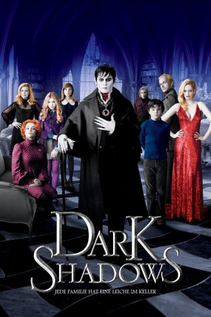
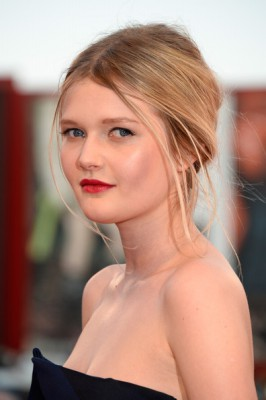
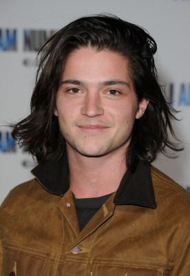

#4577 Dark Shadows
 
 IMDB-Wertung: 6.2 / 10
IMDB-Wertung: 6.2 / 10  Metascore: 0
Metascore: 0 
Im Jahr 1752 stechen Joshua und Naomi Collins mit ihrem kleinen Sohn Barnabas im englischen Liverpool in See, um in Amerika ein neues Leben zu beginnen. Doch selbst auf den Weiten des Ozeans gelingt es ihnen nicht, dem geheimnisvollen Fluch der Familie zu entkommen. Zwei Jahrzehnte später: Barnabas erobert die Welt oder doch zumindest das Städtchen Collinsport/Maine. Als Herr von Collinwood Manor verfügt Barnabas über Reichtum und Macht - bis der unverbesserliche Frauenheld den gravierenden Fehler begeht, Angelique Bouchards Herz zu brechen. Angelique ist eine Hexe im wahrsten Sinne des Wortes und beschert ihm ein Schicksal, das schlimmer ist als der Tod: Sie verwandelt ihn in einen Vampir, um ihn dann lebendig zu begraben.
Jahr: 2012
Dauer: 113 Minuten
FSK: 12
Land: USA Studio: Warner Bros.Tonspuren: DD5.1 - ,
Untertitel: Deutsch, Englisch,
Auflösung: 1080p (1920x1080) Größe: 9390 MB
Genre: Komödie, Fantasy, Horror
Regisseur:  Tim Burton
Tim Burton
Drehbuch: Mary Harron
Soundtrack:
Darsteller:
 Johnny Depp als Barnabas Collins
Johnny Depp als Barnabas Collins Michelle Pfeiffer als Elizabeth Collins Stoddard
Michelle Pfeiffer als Elizabeth Collins Stoddard Helena Bonham Carter als Dr. Julia Hoffman
Helena Bonham Carter als Dr. Julia Hoffman Eva Green als Angelique Bouchard
Eva Green als Angelique Bouchard Jackie Earle Haley als Willie Loomis
Jackie Earle Haley als Willie Loomis Jonny Lee Miller als Roger Collins
Jonny Lee Miller als Roger Collins Bella Heathcote als Victoria Winters / Josette DuPres
Bella Heathcote als Victoria Winters / Josette DuPres Chloë Grace Moretz als Carolyn Stoddard
Chloë Grace Moretz als Carolyn Stoddard Gulliver McGrath als David Collins
Gulliver McGrath als David Collins Christopher Lee als Clarney
Christopher Lee als Clarney Alice Cooper als Alice Cooper
Alice Cooper als Alice Cooper Ivan Kaye als Joshua Collins
Ivan Kaye als Joshua Collins- Susanna Cappellaro als Naomi Collins
- Josephine Butler als David's Mother
 William Hope als Sheriff
William Hope als Sheriff Shane Rimmer als Board Member 1
Shane Rimmer als Board Member 1 Michael Shannon als Board Member 2
Michael Shannon als Board Member 2- Glen Mexted als Captain Rubberpants
 Nigel Whitmey als Hard Hat 1
Nigel Whitmey als Hard Hat 1 Philip Bulcock als Hard Hat 2
Philip Bulcock als Hard Hat 2-  Sophie Kennedy Clark als Hippie Chick 1
 Hannah Murray als Hippie Chick 2
Hannah Murray als Hippie Chick 2 Sean Mahon als Collinsport Cop
Sean Mahon als Collinsport Cop- Charlotte Spencer als Coat Check Girl
- Gabriel Freilich als Hippie 3
- Thomas Grube als Construction Worker 1
 Raffey Cassidy als Young Angelique
Raffey Cassidy als Young Angelique- Jonathan Frid als Guest
- Kathryn Leigh Scott als Guest
- Lara Parker als Guest
 David Selby als Guest
David Selby als Guest- Victoria Jane Appleton als Collins Canning Worker , uncredited
 Lasco Atkins als Cannery Worker , uncredited
Lasco Atkins als Cannery Worker , uncredited Gintare Beinoraviciute als Town Lady , uncredited
Gintare Beinoraviciute als Town Lady , uncredited Greg Bennett als Chet the Taxidermist , uncredited
Greg Bennett als Chet the Taxidermist , uncredited Kenneth W Caravan als 18th Century Gentleman , uncredited
Kenneth W Caravan als 18th Century Gentleman , uncredited- Duncan Casey als Policeman , uncredited
- Edward Coupland als Fireman , uncredited
 Leigh Daniels als Slow Dancer , uncredited
Leigh Daniels als Slow Dancer , uncredited- Jel Djelal als Firefighter , uncredited
- Jake Francis als Photographer , uncredited
 Lee Nicholas Harris als Fisherman , uncredited
Lee Nicholas Harris als Fisherman , uncredited- Keaton Heinrichs als Angelbay Canning Boy , uncredited
- Tony Hunter als Factory Worker , uncredited
 Jorge Leon Martinez als Collinwood Worker , uncredited
Jorge Leon Martinez als Collinwood Worker , uncredited- David Lyddon als Workman , uncredited
- Oliver Mayo als Firefighter , uncredited
-  Thomas McDonell als Young Barnabus Collins , uncredited
 Dale Mercer als Slow Dancer , uncredited
Dale Mercer als Slow Dancer , uncredited- Valery Richardson als Townsperson , uncredited
Datei: X:\2012(A-F)\Dark Shadows (2012, FSK12, 1920x1080).mkv seit 18.10.2016
Festplatte: HD 2012(A-M)
 Es gibt insgesamt 102 Filme in der Gruppe '2012(A-F)'
Es gibt insgesamt 102 Filme in der Gruppe '2012(A-F)'